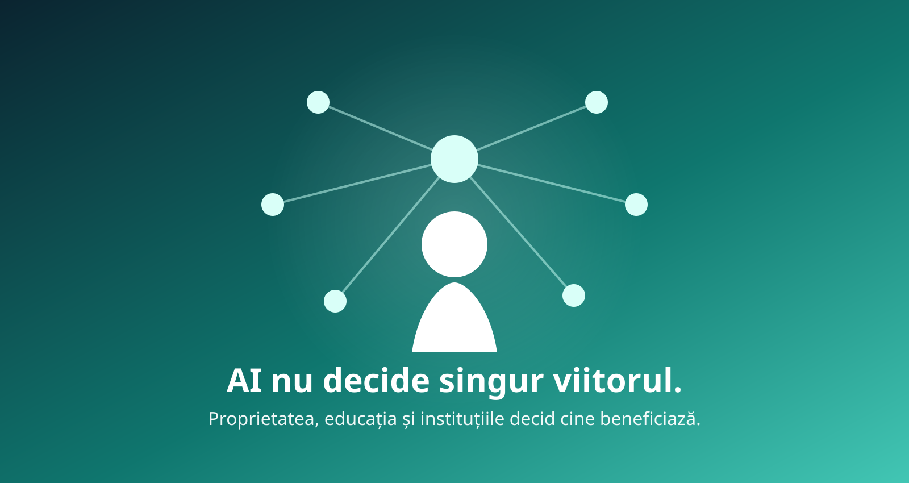

Dacă AI muncește în locul nostru, ce mai înseamnă să fii om?
Reflecții pornind de la un articol al lui Bill Gates și dintr-un dialog critic cu GPT despre o întrebare care devine tot mai greu de evitat: ce se întâmplă dacă inteligența artificială produce tot mai multă prosperitate, dar economia are nevoie de tot mai puțină muncă umană?

De la un articol la o întrebare mai mare
În august 2026, Bill Gates a publicat un text amplu despre ceea ce numește o tranziție turbulentă către era AI. Ideea lui centrală este incomodă: inteligența artificială nu automatizează doar forța fizică sau calculele repetitive. Ea începe să intre direct în activități cognitive care, până de curând, erau refugiul muncii umane.
Gates consideră că multe locuri de muncă, mai ales cele de nivel începător și mediu, ar putea dispărea definitiv. El insistă și asupra unui lucru care face această revoluție diferită de cele anterioare: tehnologia poate fi adoptată rapid, funcționează pe dispozitive pe care deja le avem și comunică în limbaj natural. Nu mai trebuie ca omul să învețe limbajul mașinii; mașina învață tot mai bine limbajul omului.
Nu suntem încă într-o economie fără muncă
Este important să nu transformăm o posibilitate într-un fapt consumat. Datele disponibile în 2026 nu arată o dispariție generalizată a locurilor de muncă din cauza AI. Organizația Internațională a Muncii arată că efectele sunt încă inegale și că transformarea sarcinilor este, deocamdată, mai vizibilă decât o înlocuire masivă a lucrătorilor.
Totuși, au apărut semnale care merită urmărite. Cercetătorii de la Stanford Digital Economy Lab au raportat în august 2026 că, în ocupațiile puternic expuse la AI, ocuparea lucrătorilor americani de 22–25 de ani se afla cu aproximativ 19% sub nivelul la care ar fi ajuns dacă ar fi evoluat precum ocuparea tinerilor din ocupații mai puțin expuse. Diferența pare să vină în special din angajări mai puține, nu dintr-un val de concedieri.
Aici apare un paradox: dacă automatizăm tocmai activitățile prin care oamenii învață o profesie, de unde vor mai apărea experții viitorului? Seniorul de astăzi a fost cândva junior. Chirurgul a fost rezident. Profesorul experimentat a fost debutant. Avocatul bun a făcut mai întâi muncă juridică simplă. O societate care automatizează primele trepte ale scării trebuie să inventeze alte moduri prin care oamenii urcă.
Omul poate deveni mai puțin necesar economic fără să devină mai puțin necesar uman
Aceasta este distincția care schimbă întreaga discuție. Economia modernă leagă aproape automat mai multe lucruri:
Dacă AI reduce masiv nevoia de muncă umană, lanțul nu mai funcționează la fel. Dar asta nu înseamnă că omul devine inutil. Înseamnă doar că piața nu mai are nevoie de 40 de ore din timpul lui în fiecare săptămână.
Îngrijirea unui copil, a unui părinte sau a unui bunic poate avea o valoare umană enormă chiar dacă piața o remunerează puțin sau deloc. La fel, studiul, creația, voluntariatul, cercetarea independentă, cultura, sportul, grija pentru comunitate sau pur și simplu formarea unei persoane mai educate și mai echilibrate pot avea o valoare socială care nu încape într-un stat de plată.
Inițial, m-am gândit chiar la o formă condiționată: primești hrană dacă înveți, urmezi un curs, mergi la facultate sau la o sală de lectură. În dialogul cu GPT, ideea a fost corectată într-un punct important: nevoile fundamentale nu ar trebui condiționate. Altfel, am înlocui obligația de a munci cu obligația de a bifa o formă de educație. Mai sănătos ar fi un nivel minim de viață garantat tuturor, însoțit de stimulente puternice pentru educație, cultură, sport, cercetare, voluntariat și îngrijirea altora.
Întrebarea decisivă poate deveni: cine deține ceea ce muncește în locul nostru?
Dacă un sistem AI și un robot pot produce cât zeci sau sute de oameni, apare un surplus economic enorm. Robotul nu cere salariu, concediu sau pensie. Costul marginal al unor servicii cognitive poate coborî spectaculos. Într-o asemenea lume, conflictul central se poate muta.
Dacă infrastructura productivă este concentrată în mâinile unui grup foarte restrâns, creșterea productivității poate mări inegalitatea. Dacă însă populația deține direct sau indirect o parte din capitalul automatizat, prosperitatea poate fi distribuită sub forma unor servicii publice mai bune, a unor dividende sociale, a unui venit minim, a unor fonduri publice de investiții sau a altor mecanisme.
Nu există un singur model posibil. Putem avea AI privat și taxare mai mare, proprietate publică asupra unei părți din infrastructură, fonduri naționale care dețin participații în capitalul automatizat, cooperative sau combinații ale acestora. Ideea importantă este alta: dacă mașinile produc o parte tot mai mare din bogăția societății, distribuirea proprietății devine cel puțin la fel de importantă ca distribuirea locurilor de muncă.
Două viitoruri posibile
Aceeași tehnologie poate alimenta ambele lumi. AI nu decide singur rezultatul. Proprietatea, fiscalitatea, educația, instituțiile și regulile politice decid cine beneficiază.
Taxarea AI sau împărțirea prosperității?
Bill Gates propune, între altele, taxarea roboților și chiar a utilizării AI. Logica lui este că sistemul fiscal nu ar trebui să ofere un avantaj artificial înlocuirii oamenilor cu mașini și că noile venituri pot finanța reconversia profesională și protecția socială.
Inițial, am privit această propunere cu suspiciune. Dacă un om atât de apropiat de lumea marilor corporații propune o anumită soluție, nu cumva există și un interes pe care nu îl văd? Dar simpla intuiție nu este dovadă. Gates nu mai conduce Microsoft, iar mecanismul fiscal pe care îl propune ar pune tocmai o sarcină suplimentară pe capitalul automatizat. Critica serioasă trebuie făcută asupra ideii, nu asupra unei intenții presupuse.
De aici apare o alternativă mai profundă: populația ar putea deține direct sau indirect o parte din infrastructura automatizată, prin fonduri publice, fonduri de pensii, cooperative sau alte forme de participație. Diferența psihologică este importantă. „Ai rămas fără serviciu și primești ajutor” îl poziționează pe om ca beneficiar pasiv. „Ești coproprietar al unei părți din infrastructura productivă și primești dividendul tău” descrie o altă relație cu economia.
Human Reserved: aici sunt între Gates și propria mea poziție inițială
Gates propune ideea unor activități „Human Reserved”: zone pe care am putea decide să nu le automatizăm complet, chiar dacă tehnologia ar putea face acest lucru.
Poziția mea inițială a fost mai radicală: dacă mașina poate face ceva mai bine pentru oameni, pentru un mediu sănătos și pentru planetă, atunci să o facă mașina. Nu are sens să păstrăm muncă inutilă doar pentru a justifica distribuirea veniturilor.
„Pentru ce mă mai trezesc dimineața?”
Una dintre cele mai frecvente temeri într-o societate cu mai puțină muncă este pierderea sensului. Jobul oferă structură, statut, relații și sentimentul că cineva are nevoie de noi.
Dar poate proiectăm prea mult societatea actuală asupra uneia viitoare. Astăzi, dacă un om nu lucrează, el se poate simți exclus tocmai pentru că majoritatea celorlalți lucrează, iar cultura leagă puternic valoarea adultului de profesie. Dacă însă norma socială se schimbă și munca obligatorie ocupă doar o parte mică din viață, oamenii își pot construi alte forme de sens.
Școala într-o lume în care AI face ieftine sarcinile intelectuale standardizate

Aici discuția ajunge direct în educație. Dacă memoria, calculul, redactarea și chiar o parte din raționament devin tot mai ieftine economic pentru că AI le execută rapid, școala nu mai poate avea drept scop principal producerea unui om care execută corect sarcini intelectuale standardizate.
Asta nu înseamnă că elevul nu mai trebuie să știe să calculeze, să scrie sau să memoreze nimic. Fără cunoaștere internă, omul nici măcar nu poate evalua bine răspunsul mașinii. Dar centrul de greutate trebuie să se mute.
Concluzie: tehnologia nu scrie singură contractul social
AI poate reduce costurile, poate crește productivitatea și poate elibera o cantitate enormă de timp uman. Aceleași capacități pot însă produce și o concentrare fără precedent a bogăției și puterii.
Nu tehnologia decide singură între aceste două lumi. Alegerile privind proprietatea, taxarea, educația, instituțiile și responsabilitatea vor conta enorm.
Poate că marea întrebare a erei AI nu este doar „ce va mai lucra omul?”. Este și: ce fel de om vrem să putem deveni atunci când supraviețuirea nu ne mai ocupă cea mai mare parte a vieții?
Surse și puncte de plecare
- Bill Gates, The turbulent AI era is here. The choices we make now are critical, 28 august 2026.
- Stanford Digital Economy Lab, Canaries in the Coal Mine? Six Facts about the Recent Employment Effects of Artificial Intelligence, actualizare august 2026.
- International Labour Organization, The impact of GenAI on jobs, productivity and work organization, 2026.
Acest material este un eseu reflexiv, nu o predicție certă despre viitor. Separă, pe cât posibil, datele observabile de scenariile și judecățile normative discutate.